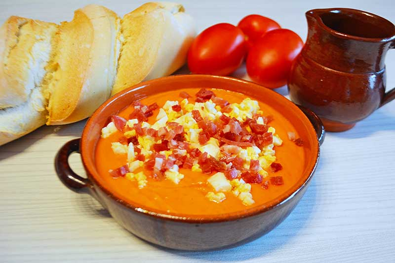

Receta 2
Ingredientes
- 150 ml de aceite de oliva virgen extra
- 1 Kg. de tomates rojos bien maduros.
- 200 g. de pan de telera cordobesa o si no encontráis pan de trigo blanco (mejor que tenga un día o dos)
- 1 diente de ajo de Montalbán o similar (la cantidad de ajo al gusto, mucha gente le añade sólo medio)
- 10 g. de sal (al gusto)
Instrucciones
- Limpiamos bien los tomates y los cortamos en cuartos, los añadimos a un bol grande y trituramos con la batidora hasta que nos quede una salsa líquida.
- Pasamos esta salsa por un colador para retirar posibles trozos de piel y pequeñas pepitas que hayan quedado al batirlos.
- Cortamos el pan en trozos pequeños y los añadimos a la crema de tomate anterior. Los dejamos reposar durante unos 10 minutos. Así ayudamos a que el pan se ablande si está muy duro y será mucho más fácil de batir.
- Pelamos el ajo y, como lo vamos a usar en crudo, le quitamos el centro para que no repita. Lo añadimos al tomate con el pan. Echamos el aceite de oliva virgen extra y la sal. Lo pasamos todo por la batidora hasta que nos quede lo más fino posible. Probamos si esta bien de sal y si no rectificamos con un poco más.
- Sólo nos queda meter el bol en la nevera y dejar que se enfríe. En un par de horas lo tendréis bien fresquito y perfecto para probar el mejor salmorejo cordobés.
- A la hora de la presentación, lo mejor es ponerlo en un plato hondo o cuenco. Espolvoreamos con unas virutas de jamón serrano o ibérico con un punto (10 segundos) de microondas. Así conseguiréis un toque crujiente.
- Además el huevo cocido y unas gotitas de aove le quedan perfecto. Pero no tiene por qué quedar ahí el tema, el consejo regulador del salmorejo también nos recomienda: pepino, pimiento, cebolla, zanahoria, remolacha o melocotón. Esto os lo dejo a vuestro gusto, buen provecho.
Emplatado de la elaboración
